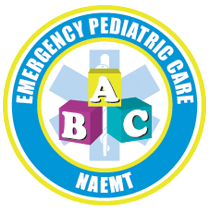
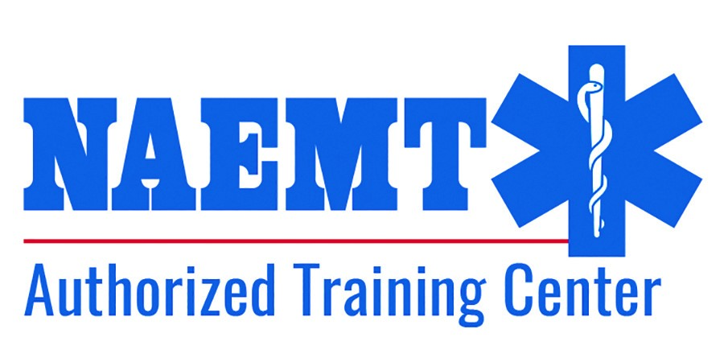

Emergency Pediatric Care I Atención Pediátrica de Emergencia (EPC) - NAEMT
Online
12 y 13 de junio 08:00 a.m.
Perú
Facebook
Gracias
Ud. se encuentra inscrito en este curso.
Para pagos click aqui:
PAGAR AQUÍ
**CODIGOS DE PAGO:
PARTICIPANTE G3 NACIONAL: S/600.00 (cod. 894520)
PARTICIPANTE G3 EXTRANJERO: $180.00 (cod. 894519)
(Válido solo para el curso en mención)
El curso se enfoca en la fisiología pediátrica crítica, enfermedades, lesiones e intervenciones que ayudan a los profesionales de EMS a brindar el mejor tratamiento para niños enfermos y heridos en el campo. Enfatiza las habilidades de pensamiento crítico para tratar a un paciente pediátrico de forma eficaz. Desarrollado por la Academia Americana de Pediatría, el curso enseña el cómo evaluar y manejar mejor a los niños enfermos o heridos mediante contenidos médicos integrales.
Características:
- El Triángulo de Evaluación Pediátrica (TEP) representa la esencia del método de evaluación del Programa de educación pediátrica prehospitalaria (PEPP) del paciente, que incluye el aspecto de evaluación, el trabajo respiratorio y la circulación cutánea.
- El desarrollo de la evaluación del paciente proporciona a los estudiantes una referencia de fácil comprensión del proceso de la evaluación del paciente pediátrico. Los estudios de caso ofrecen una oportunidad para el pensamiento crítico y para animar a los estudiantes a considerar cómo tratar un caso similar en el campo.
- Procedimientos con explicaciones paso a paso y los resúmenes visuales de SVB pediátrica.
Duración: 16 horas
Material: Ebook - Programa de educación pediátrica prehospitalaria (PEPP) representa una fuente completa de información médica prehospitalaria para la atención de urgencias de los lactantes y los niños.
- El contenido del libro de texto de tercera edición, proporciona todas las declaraciones en competencias pediátricas específicas con los Estándares Nacionales de Educación de SMU.
- El contenido de shock y reanimación se cubre en dos capítulos distintos haciendo mayor énfasis en los temas críticos.
- Un equipo de autores de primera categoría trabajó en conjunto con médicos revisores de la American Academy Pediatrics el contenido médico excepcional con un enfoque prehospitalario.
Certificación:
01 certificado por la National Association of Emergency Medical Technicians (NAEMT) válido por cuatro años.
01 certificado a nombre de la Unidad de Posgrado y Especialización de la Facultad de Medicina Humana de la Universidad Peruana Cayetano Heredia.
Para mayor información, escríbenos a: famed.inscripciones.cei@oficinas-upch.pe por WhatsApp: +51966462215
